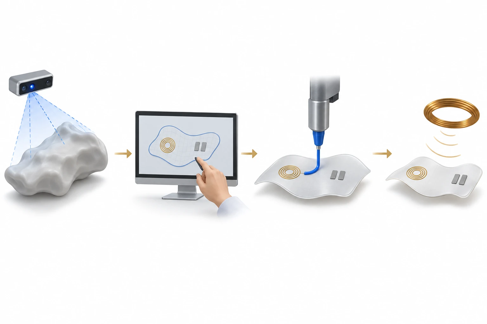

연구 개요
깊이 카메라로 상처를 측정한 뒤 6축 로봇 팔이 상처 맞춤형 무선 전기자극 패치(CARE)를 인쇄하는 연구로, 연세대학교 BLISS Lab(서정목 교수 연구실)이 하버드 의대 브리검 여성병원 연구진과 함께 개발했습니다. 상처 스캔 처리 시간은 3 cm × 3 cm에서 8 cm × 8 cm 상처까지 13.9초에서 17.0초였고, 시뮬레이션에서 전극 위 10 mm 지점의 전기장은 88.8 mV/mm였습니다.
연구 배경
전기자극은 세포 이동과 혈관 신생을 이끄는 내인성 상처 전류를 모사하거나 강화할 수 있지만, 병원에서 쓰는 대형 장비가 필요해 임상 적용이 제한되어 왔습니다. 패치형 소자는 조직에 붙어 있으면서도 제거할 때 조직을 손상하지 않아야 합니다. 리소그래피와 스크린 인쇄는 마스크가 필요해 환자마다 크기와 모양이 다른 상처에 맞추기 어렵습니다. 3D 스캔과 결합한 기존 현장 인쇄는 3축 장비를 사용해 몸 옆면의 상처에 접근하기 어렵고, 별도의 휴대형 스캐너는 표지(marker)와 좌표 변환이 필요해 처리 단계가 늘어납니다.
설계와 접근
CARE는 6축 로봇 팔에 깊이 카메라와 공압식 다중 주사기 인쇄 헤드를 장착한 INSIGHT 시스템으로 제작합니다. 카메라로 신체를 스캔하고 주변 피부와의 색 대비로 상처 윤곽을 추출한 뒤, 경계 상자로 상처의 폭과 길이를 구합니다. 굴곡지거나 큰 상처는 여러 각도에서 촬영해 점군(point cloud)을 합칩니다. 상처 크기는 MATLAB 스크립트로 전달되어, 13.56 MHz 여기 코일과 공진하도록 빗살형 전극과 수신 코일의 형상을 정합니다. 이후 은 전도성 잉크, PDMS 유전체 잉크, 광경화성 PGSA(poly(glycerol-co-sebacate) acrylate) 접착 잉크의 세 가지 잉크로 코일, 유전체, 전극, 보호층, 접착층의 다섯 층을 80 °C 핫플레이트 위 유연 기판에 인쇄하며, 로봇 팔을 ±45° 회전해 주사기를 바꿉니다.

축척을 따르지 않은 AI 생성 개념도입니다. CARE의 형상 정보 활용, 수동 설계 단계, 서로 다른 잉크의 순차 인쇄를 설명합니다. 한 시점에서 작동 중인 노즐 하나를 보여 줍니다. 전극, 수신 코일, 별도 여기 코일은 기능 기호이며 회로도·실험·치료 결과가 아닙니다.
설계 개념을 설명하기 위해 이 자료실에서 생성한 개념도로, 논문 원그림이 아니며 측정 데이터를 나타내지 않습니다.
평가 방법
스캔 정확도는 피부색 5종과 상처색 5종을 조합한 상처 모형, 그리고 세 각도(0°, ±30°)에서 촬영한 굴곡 상처 모형으로 평가했습니다. 인쇄한 전도선은 50% 굽힘과 0–10% 인장을 반복해 시험했고, 접착력은 돼지 피부에서 겹치기 전단 시험으로, 용출물 세포독성은 인간 진피 섬유아세포(HDF)로 확인했습니다. 무선 성능은 전기장 시뮬레이션, 인덕턴스 측정, 전송계수 S21로 평가했습니다. 13.56 MHz 반송파에 20 Hz 펄스를 실은 펄스 고주파 신호의 세포 효과는 HDF와 녹색 형광 단백질 발현 인간 제대정맥 내피세포(GFP-HUVEC)에서 증식, 이동, 관 형성, CD31 발현, 성장인자 분비로 살폈습니다. 불규칙한 상처에 맞춘 부착은 폐기된 생쥐의 등 피부에서 생체 외(ex vivo)로 시연했습니다.
연구 내용과 주요 결과
인쇄 전 처리 시간은 상처 크기가 3 cm × 3 cm에서 8 cm × 8 cm로 커질 때 13.9초에서 17.0초로 조금 늘었고, 스캔은 크기와 관계없이 20초 안에 끝났습니다. 피부색과 상처색의 25가지 조합 모두에서 폭과 길이 인식 오차는 2.6% 미만이었고, 굴곡 모형의 다각도 스캔 정확도는 94–99%였습니다. 패치 인쇄에는 3 cm × 3 cm 상처에서 약 11분, 8 cm × 8 cm 상처에서 약 42분이 걸렸고, 1분간 자외선 경화 후 부착할 수 있었습니다. 굴곡 기판과 45도로 기울인 기판에도 코일을 인쇄했습니다.
인쇄한 전도선의 저항은 50% 굽힘 1000회 동안 안정했고, 인장 변형률이 0에서 10%로 커질 때 최대 10%까지 서서히 증가했다가 변형을 풀면 원래 값으로 돌아왔습니다. PGSA 접착층의 돼지 피부 겹치기 전단 강도는 5.24 kPa로, 저자들은 이를 상용 피브린 접착제(1.09 ± 0.04 kPa)의 5배라고 서술했습니다. 100%, 50%, 25% 농도의 용출물에서 HDF 생존율에 유의한 차이는 없었습니다.
시뮬레이션에서 보호층을 통과한 전기장은 1.37 V/mm, 전극 위 10 mm 지점에서는 88.8 mV/mm로, 세포 이동을 촉진한다고 알려진 25 mV/mm보다 높았습니다. 측정한 S21은 13.56 MHz에서 약 10 dB였고, 외부 코일에 10 V를 인가했을 때 패치에는 약 3 V가 전달되었습니다. 1.5 cm 정사각형 상처에서 목표, 최적화, 실측 코일 인덕턴스는 각각 2.27, 2.03, 1.75 μH였으며, 저자들은 전극 연결을 위해 가장 안쪽 코일의 절반을 제거한 것을 실측값이 낮아진 원인으로 설명했습니다.
체외 실험에서 99% 듀티 사이클로 3일간 자극하자 HDF와 GFP-HUVEC 모두 대조군보다 DNA 양이 많았습니다. 20% 듀티 사이클에서 이동 속도는 결과 절에 따르면 HDF가 24시간 후 1.86배, GFP-HUVEC가 8시간 후 1.64배 빨랐으며, 초록에는 섬유아세포 1.6배, 내피세포 1.9배로 적혀 있습니다. 6시간 자극 후 관 형성 시험에서 접합부 수는 2배 이상이었고, 99% 듀티 사이클에서 CD31 발현은 1.8배 증가했으며, 자극한 HDF는 섬유아세포 성장인자(FGF)와 혈관내피 성장인자 A(VEGF-A)를 더 많이 분비했습니다.
남은 과제
저자들은 상처 정보를 MATLAB 스크립트로 수동 전달했으며, 전극과 코일을 시스템 안에서 자동으로 설계하는 새 알고리즘이 필요하다고 밝혔습니다. 여기 코일은 단단한 인쇄회로기판 위에 있었고, 임상 적용을 위해서는 외부 코일도 유연 기판에 인쇄해야 합니다. 후속 소자에는 온도, 임피던스, pH 센서를 더해 폐루프 감시를 구현할 계획입니다. 생물학적 효과는 세포 배양에서 평가했으며, 생쥐에서는 생체 외 부착 시연만 수행했습니다.
함께 읽을 연구
Wireless, closed-loop, smart bandage with integrated sensors and stimulators for advanced wound care and accelerated healing
DOI: 10.1038/s41587-022-01528-3 ↗
공개 초록은 피부 임피던스와 온도의 폐루프 감시를 전기자극과 결합하고, 필요할 때 붙이고 뗄 수 있는 하이드로젤 전극을 사용한 무선 전원 붕대를 생쥐 상처 모델에서 시험한 연구를 설명합니다. CARE는 상처마다 전극과 수신 코일의 크기를 정해 인쇄하는 단계를 다루며, 생물학적 효과는 세포 배양에서 확인했습니다.
초록을 참고한 소개RESEARCH NEWS
연구 소식
해설에 사용한 자료
이 해설은 PMC의 NIH 저자 원고(PMC11695167) 본문과 그림 설명을 바탕으로 합니다. 보충자료와 동영상은 검토하지 않았으며, 방법 절의 세포 이동 시험 조건(약 10 Vpp, 4 Hz, 6시간)은 결과 절의 신호·시간 조건과 다르게 적혀 있습니다.